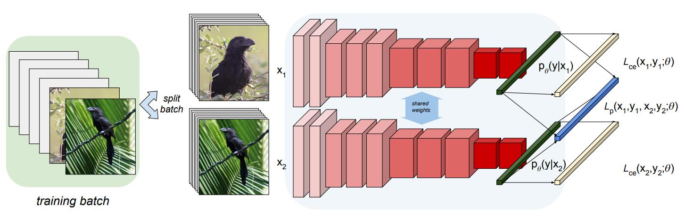
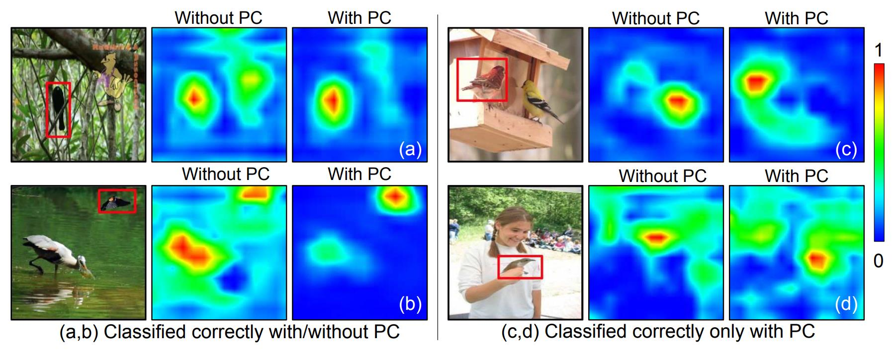
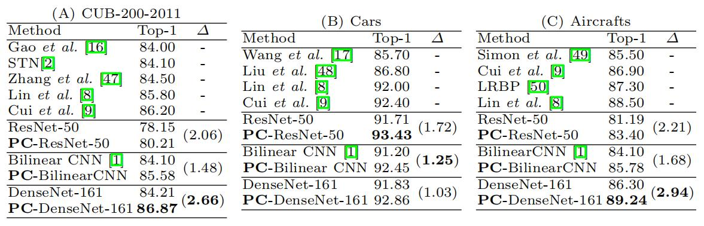

细粒度：PC¶
综述¶
会议时间：European Conference on Computer Vision 2018 (ECCV, 18)
源码地址(PyTorch版本)：https://github.com/abhimanyudubey/confusion
针对领域：细粒度图像分类(FGVC)
主要思想¶
细粒度分类中，之前的工作大多是集中在应对由姿势、光照和视点变化引起的类内差异性大的问题，如应用区域定位技术或者利用来自网络附加的数据进行扩充训练集操作，作者发现以前的研究并没有把太多的注意力放在由类内相似性高而可能引起的问题上。与传统大规模的视觉分类任务(large-scale visual classification, LSVC)类似，细粒度分类也是利用交叉熵损失函数进行训练。在LSVC数据集中(如：ImageNet)，由于数据集中存在较为显著的类间差异，因此使用交叉熵损失进行强区分性学习是非常成功的，因为神经网络可以学习到具有大量数据的广泛语义特征。
但由于细粒度分类数据集具有高类内差异和高类间相似度的特点，交叉熵损失对于细粒度分类任务可能并不适用。如果在训练集中，两个样本具有非常相似的视觉内容，但是却有不同的类别标签，通过最小化交叉熵损失可能会强迫网络去以高置信度学习能够区分这两张图片的特征，极端情况下，为了最小化训练损失，网络可能会学到特定于样本的特征(仅在该样本中存在，因此对于该样本来说具有非常强的辨别性)，而不是特定于类别的特征，进一步混淆网络对图片类别的判断，类似于过拟合现象。在细粒度分类任务中，由于能够概括类别特征的样本非常少，因此这种效应会更加的明显。
基于上述假设，作者提出了一种在训练过程中引入混淆(confusion)的方法，从而迫使网络去学习辨别性稍差的特征，进一步防止网络过度拟合基于样本的特征(该方法类似于一种正则化措施)。具体的来说，通过最小化随机成对样本之间的预测概率分布之间的距离，来达到混淆深层网络的作用，进一步应对预测中过度自信的情况，提高泛化性能。因此，作者提出了成对混淆(Pairwise Confusion, PC)算法——一种用于端到端训练卷积神经网络进行细粒度分类的算法。
方法¶
将”混淆”条件概率分布的想法形象化，假设两张输入图片x_1和x_2的条件概率分布分别为p_{\theta}(y|x_1)和p_{\theta}(y|x_2)，对于具有N个输出类的分类问题，每个分布都是一个N的向量，元素i表示给定输入x时，分类器在类别y_i的可信度。如果希望混淆一对图像x_1和x_2的输出类别，首先就应该学习一个参数\theta(分类器参数)，该参数在某个距离度量下使得这些条件概率分布更接近，进一步使得x_1和x_2的预测更加相似。
KL散度混淆：
如果想要衡量两个预测之间的概率分布，最自然的就是想到利用KL散度(Kullback-Liebler)进行计算：
欧氏距离混淆：
由于N个类别的条件概率分布是\mathbb R^N(N维向量)中的一个元素，因此，作者使用了欧氏距离来衡量两个条件概率分布的混淆，利用如下等式来定义一对输入图像x_1和x_2的欧式混淆(Euclidean Confusion)\mathbb D_{EC}(·, ·)：
训练过程：
网络结构如下图，首先将同一批次(batch)的输入分成两部分，对每个子批次预测的交叉熵进行评估，之后针对不同子批次的相应样本计算成对混淆损失，当样本属于不同类时添加欧式混淆，如果样本属于相同类，则不添加混淆损失：

对于一对图像x_1、x_2以及相应的预测概率y_1、y_2，模型的总损失如下：
实验¶
可视化分析¶
为了定性地研究PC的有效性，作者可视化了基线模型与基线模型加PC的对比图。如下图所示，引入了PC模块的网络可以使模型更加精准、紧密地定位物体的所在，例如下图第一个例子，右侧是一个卡通鸟，属于特定于样本的特征，即噪点，与基线模型相比，PC模块可以很好地使网络忽略掉右侧的卡通鸟，而让网络主要关注左侧的真实鸟。
下图第一列的例子为：基线模型与引入了PC模块的模型都做出了正确的决策，但是由图中可以看出，基线模型关注点比较分散，并且容易被样本噪声所吸引，不能很好的关注类别物体所在的位置。第二列的例子为：基线模型做出了错误的决策，而通过引入PC模块来纠正了模型的预测。

精度对比¶

总结¶
本文提出了一种成对混淆(PC)优化策略，通过鼓励输出的混淆来提高细粒度视觉分类任务的泛化能力。实验表明，经过PC训练出来的网络显著地改进了模型的定位性能，有利于提高分类的精度。与一般设计新的、复杂的网络结构相比，PC易于实现，不会在训练期间增加过多的开支，并且便于添加到各种网络模型中，来提高模型的性能。
注：以上内容仅是笔者的个人观点，若有错误，欢迎大家批评指正。
最后一次修改日期：2021年12月29日